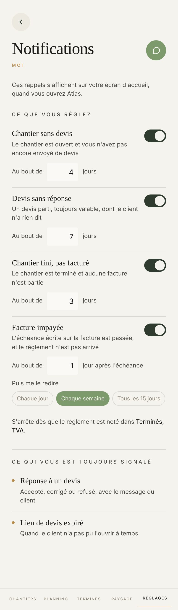

Proposé
Aujourd'hui

Ce qui change
- Sous chaque rappel allumé, la carte qu'il fera naître sur votre accueil, dans sa couleur : ambre pour le devis jamais parti, blanche pour mémoire, rouge pour l'impayé. Le nombre de jours qu'on règle se lit aussitôt dans la carte.
- Chaque rappel porte devant son nom une pastille de la couleur de sa carte. Éteint, il perd sa couleur, et sa carte disparaît avec son délai.
- Le délai se règle par moins et plus, de 1 à 90 jours. Le nombre se tape encore au clavier si on le touche.
- Le rythme de l'impayé en trois grands choix de 52 px, au lieu de trois pastilles en 12 px.
- Ce qui est toujours signalé montre les cartes elles-mêmes, chacune dans sa couleur : Devis accepté, Correction demandée, Autre date proposée, Devis retourné, Devis caduc.
- Six phrases partent, parce que la carte en dessous dit la même chose : les quatre phrases grises sous les rappels (« Le chantier est ouvert et vous n'avez pas encore envoyé de devis »…) et les deux sous ce qui est toujours signalé.
- Plus de « MOI » doré sous le titre ; les titres de paquet passent en doré.
Ce qui ne bouge pas
- Les quatre noms, dont « Chantier sans devis » que vous avez choisi le 16 août, et leur ordre : ce que vous réglez d'abord, ce qui est toujours signalé en bas.
- Les délais d'origine : 4, 7, 3 jours, et 1 jour après l'échéance. « 1 jour », jamais « 1 jours ».
- Le rythme de l'impayé en trois choix, jamais une case, et « S'arrête dès que le règlement est noté dans Terminés, TVA. »
- La phrase du haut : « Ces rappels s'affichent sur votre écran d'accueil, quand vous ouvrez Atlas. »
- Un salarié ne règle rien ici : touchez « Un salarié ».
À trancher
- Rallumé, un rappel reprend ici le délai qu'il avait. Dans l'appli, il repart à 7 jours, même l'impayé que vous aviez réglé à 1 jour : à corriger dans le code si vous êtes d'accord.
- D'autres cartes arrivent sur l'accueil sans interrupteur et ne sont pas citées ici : Facture reçue, Retour pas reçu, Virement reçu, Votre banque. Les ajouter à « toujours signalé », ou laisser la liste à deux.